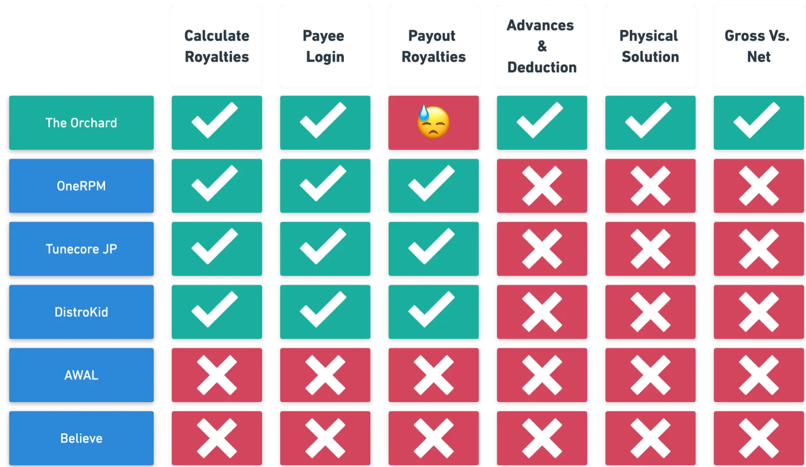
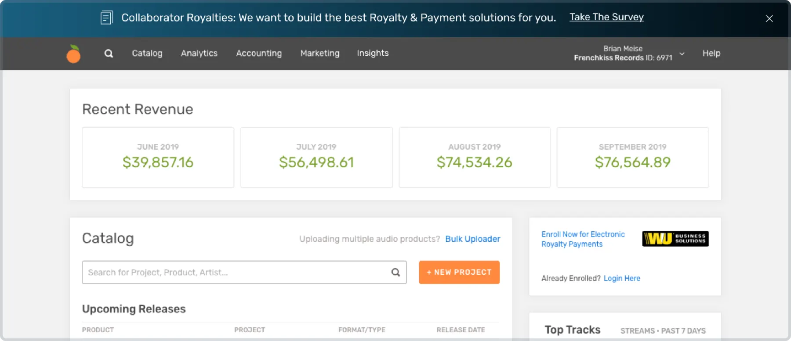
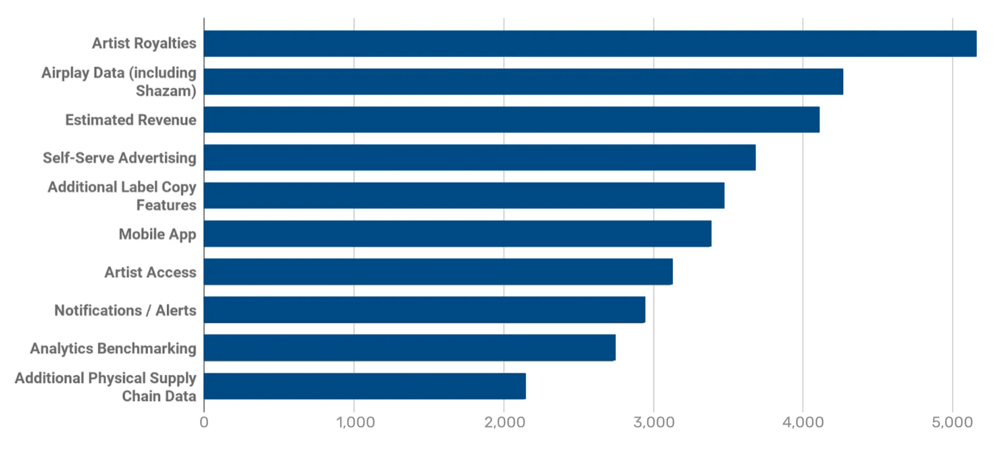
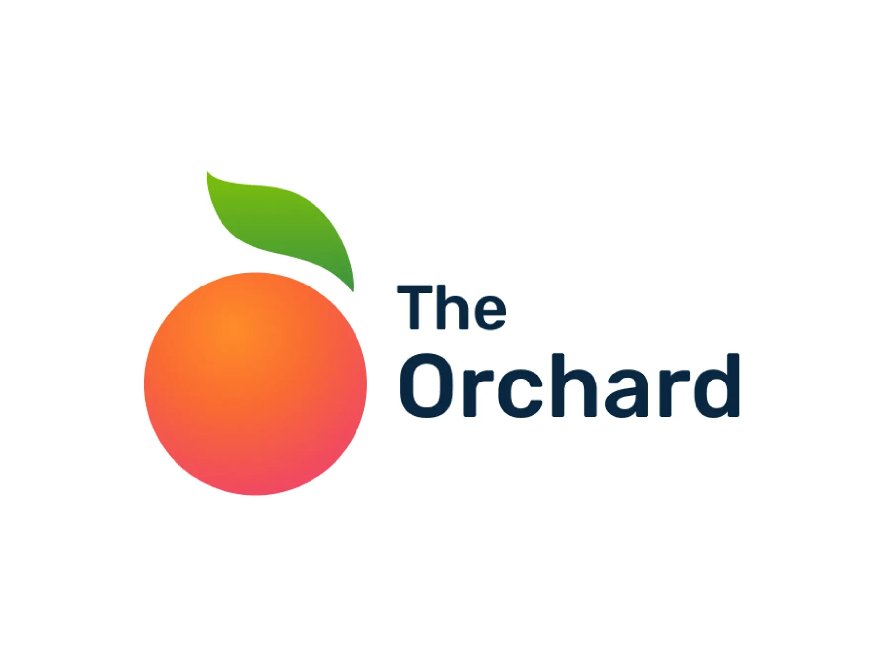
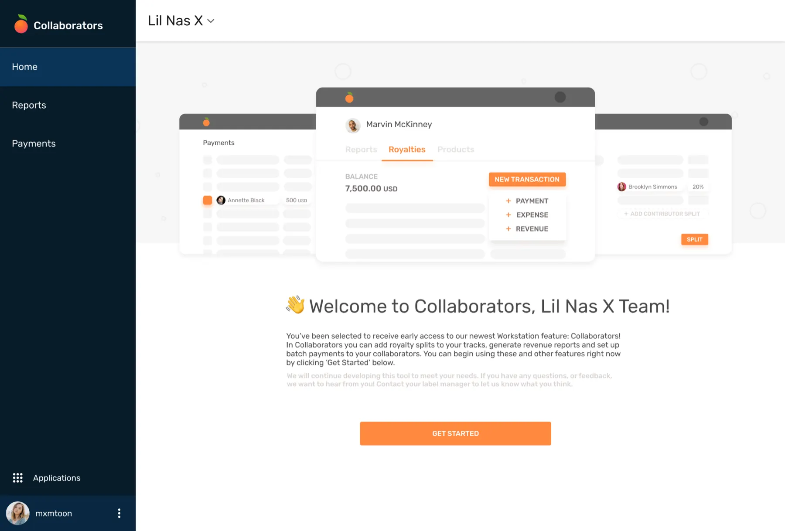
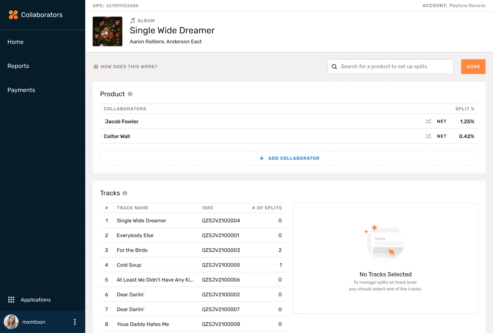
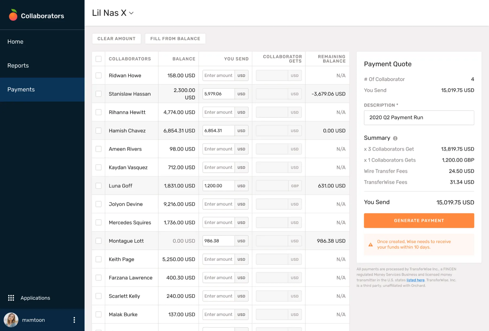
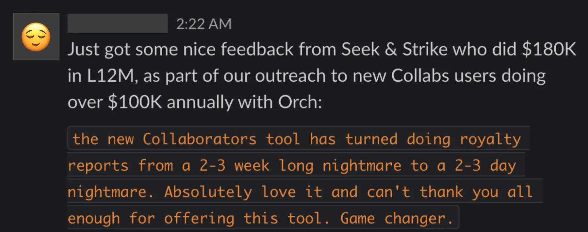
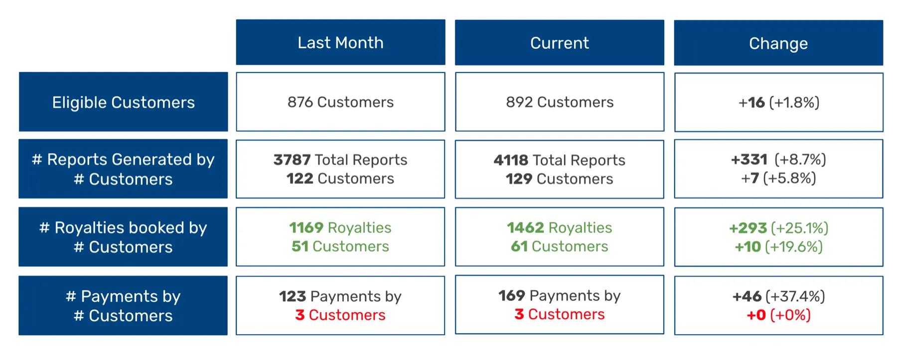

The problem
The Orchard wanted to keep its customers, and created a three-pronged approach for doing so:
- Provide better business intelligence
- Provide better tools for managing content
- Offer accounting tools that set us apart from competitors
How might we provide accounting tools that help our customers better run their business?
Competitive analysis
The Orchard was competitive in its product offering except for one key area: paying out royalties.

Soliciting user feedback
The first step was to recruit users and learn how they work: how much detail they need, the size of their business, how many artists they manage, what format they use for statements, and how they currently calculate royalties.

The results confirmed our problem statement. Users ranked royalties as the most important need.

We heard feedback that pointed us toward concepts worth testing:
“Being able to split our net revenue by release to pay band members would be great.”
“Would love the option to input artist / campaign expenses within The Orchard.”
“Really looking forward to see how you include a royalty tool which would take away tons of work, as we still do royalties by hand for each product. :)”
Pain points
Through a series of interviews with defined personas, we confirmed the pain points of each user type:

Designs
After synthesizing the feedback, I designed the interface we used for further testing. Once we were happy with the results, I helped develop and launch the product.



Customer feedback
We received a variety of feedback, and it was great to see wins like this one:

What we learned
01. Adoption was lower than expected
- Customers with a small number of collaborators may not need this product
- Some labels pay upon receipt of invoice and don’t need batch payments
- Labels have existing payment methods they are happy with and are reluctant to change
02. Customers weren’t using the payments portion
- Confusion and time issues around the process with Wise, the payment processor
- Lack of understanding of the funding process
- Some territories were not supported by Wise
